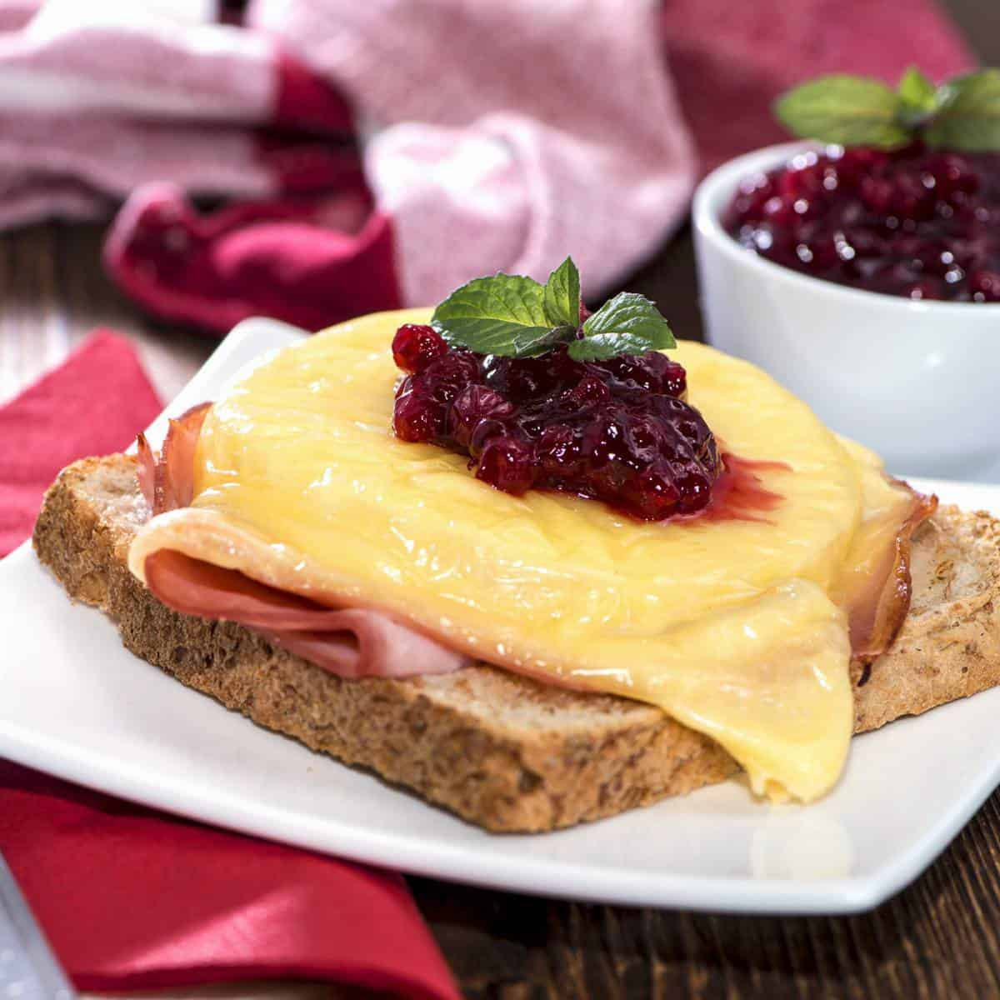

The Wurst-Kept Secrets of
German Gastronomy
Quick Tip From The Chef
"Ah, my little schnitzel-maker! When preparing a German dish, always remember to give your ingredients a pep talk in German, of course! They may not understand the words, but the enthusiasm will surely infuse your dish with that special touch of German gemütlichkeit. So, tell your potatoes they're the kartoffel stars of the show and encourage your sausages to waltz their way into deliciousness. Guten Appetit and viel Glück in the kitchen, my dear!" 🇩🇪
"German Hawaii Toast"

Difficulty: ⏺ ⏺ ⏺ ⏺ ⭐️
Time: 0.5 Hours
Disgustingness: ⏺ ⏺ 🤢 🤢 🤢
Ingredients
- 8 Slices of Bread 🍞
- 8 Slices of Ham 🥓
- 4 Tbsp Butter 🧈
- 8 Slices Pineapple Rings (canned or fresh), drained and blotted with a paper towel 🍍
- 8 Slices Emmenthal, Gruyere or Swiss Cheese 🧀
- 8 Maraschino Cherries 🍒 (or 4 tablespoons fruit preserves such as cherry or cranberry)
Instructions
- Preheat the oven to 425 degrees F (220°C).
- Briefly toast each slice of bread in the toaster.
- Butter each piece of bread and lay the bread slices down side by side on a lined baking sheet.
- Place a slice of ham on each slice of bread followed by a pineapple ring and slice or sprinkling of cheese.
- Bake for 10-15 minutes or until the cheese is melted.
- Remove from the oven and either place a cherry in the center of the pineapple ring or a half tablespoon of fruit preserves.
- Serve immediately!